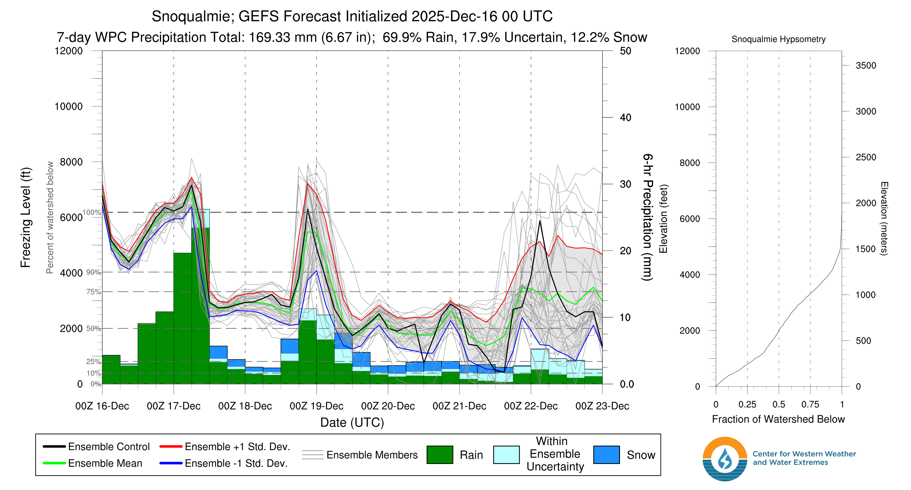
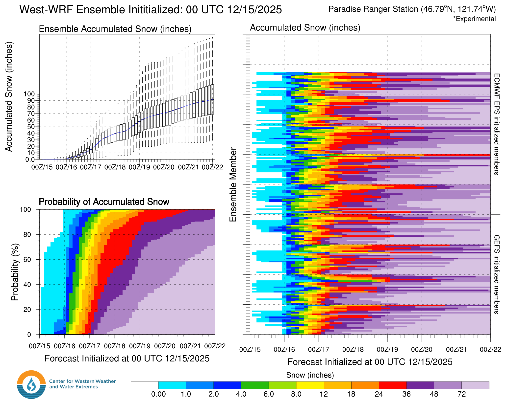

🏇Giddy Up! Winter is Knocking at our Door
Welcome to The Dendritic Growth Zone!
🔮 Forecast Discussion
The weather is starting to turn in our favor so this week we are posting a bonus forecast discussion in addition to the regularly scheduled Thursday forecast.
Observation Highlight from the Past Week - Blue 🟦
Given the lack of snow across the Cascades, our observation highlight today is brought to you by the color blue 🟦. The skies were this strange bluish color briefly on Saturday leaving many PNW residents both surprised and amazed by the revelation. Further study must be done to fully understand what happened.
Short-term (Tuesday-Thursday)
Monday brought heavy precipitation to mountain locations and scarily high freezing levels Since peaking mid-day Monday, temperatures have fallen back into the low to mid-30s with scattered precipitation Monday night. On Tuesday, we'll start the day with more scattered precipitation and see freezing levels around 4000' near Baker and Stevens and closer 5000' near Paradise. Freezing levels will climb as precipitation rates increase into Tuesday night as yet another atmospheric river (3/5 on the AR scale) aims its watery tendrils at the Pacific Northwest.

There is high confidence that freezing levels will crater below 3000' with a strong frontal passage early Wednesday morning. With this cold air, we will finally be able to start building our base at lower elevation trailheads. Thursday, freezing levels will climb once again likely to 5000-6000' ahead of an atmospheric river (yes I know, another one). However, the core of the Thursday AR (2/5 on the AR scale) is expected to make landfall along the Oregon Coast so this warm air advection will be short-lived as it clears out by Friday morning.
Medium-Term (Friday-Monday)
Now here's the good part:
After freezing levels crash Friday morning, we're looking at an extended period of glorious moist, westerly flow combined with COLD(!) air. The snow will really start to stack up over the weekend with significant accumulation at nearly all mountain locations across Western Washington. Whether you've been burning your skis, washing your car, or any other chionophilic religious practice, Ullr has answered our prayers.

🚧👷Site Updates👷🚧!
The past week brough significant updates to our website. Our evaluation page is now up and
running to help us evaluate how well we've done with our forecasts. We also made significant
improvements to the Current Weather page. Now located in the main website header,
this page now sports a shiny new map with the latest temperature and snow data from a variety
of NWAC and SNOTEL sites. Please let us know via our contact form on the home page if there
are any other sites you'd like to see featured here!
Current Weather.
Thanks again for visiting!
❄️ Snowfall
Weekend Snow Accumulation Forecast
| Site | Through 4pm Thursday | 4pm Thursday to 4pm Monday |
|---|---|---|
| Mt. Baker | 18-28" | 16-24" |
| Washington Pass | 30-46" | 14-20" |
| Stevens Pass | 14-22" | 16-26" |
| Hurricane Ridge | 18-24" | 8-14" |
| Blewett Pass | 10-16" | 4-10" |
| Snoqualmie Pass | 10-18" | 16-26" |
| Crystal | 14-28" | 10-24" |
| Paradise | 26-40" | 14-30" |
| White Pass | 14-20" | 10-16" |
Check back in on Thursday for an updated forecast and hopefully some fresh snow!
🧊 Freezing Level
- Tuesday: 4000-6000 feet, trending up
- Wednesd: 2500-3500 feet
- Thursday: 5000-6000 feet, spiking in afternoon
🎿 Our Recommendations
Best Choice This Weekend: Snoqualmie Pass/Alpental Backcountry
The fly in the ointment this week will be access. Many of our favorite ski areas and trailheads are inaccessible due to road damage suffered during recent atmospheric rivers. Mt. Baker Ski Area, Stevens Pass, and Crystal Mountain areas are all inaccessible as of Monday evening. By default, this may leave the Snoqualmie Pass as the best option this weekend. To be clear, there is little to no snow even at mid-elevations in the Alpental Backcountry so it may still be quite sharky.
Runner-Up: White Pass
White Pass also might end up as a good choice due if nothing else to having an accessible road to its trailhead.